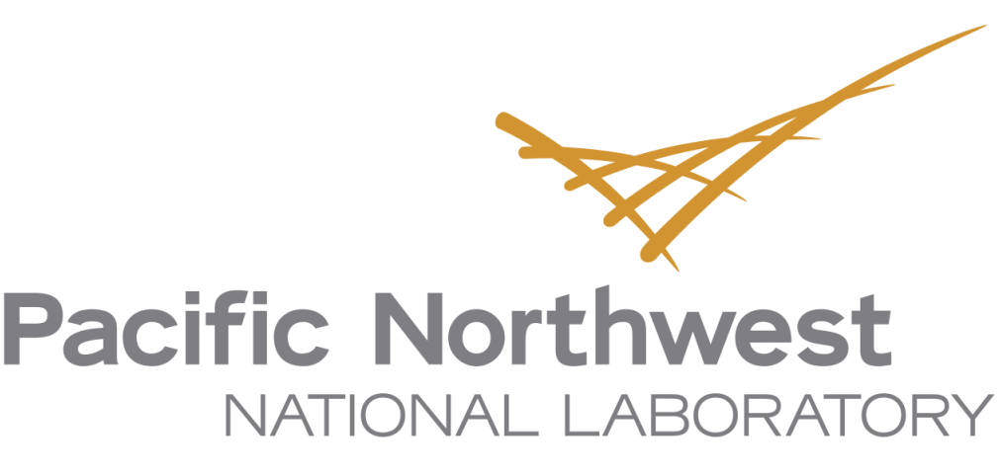
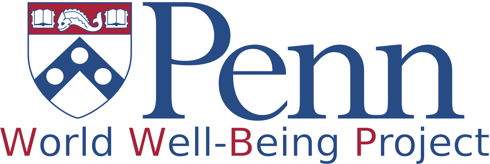
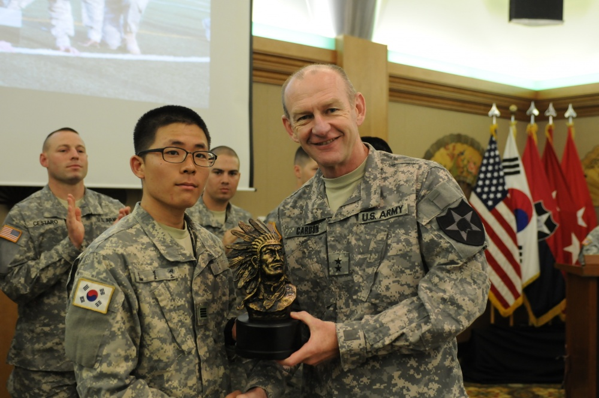

I am a PhD Candidate in Computer Science of Stony Brook University.
I am very grateful for having H Andrew Schwartz as my advisor.
My key research focus is in the field of Natural Language Processing (NLP) for social media analysis, language modeling, information extraction and data analysis. I collaborate with psychologists and computational linguists for Human-centered language modeling to obtain higher accuracies of various NLP tasks from traditional tasks (e.g., sentiment analysis) to novel tasks such as discourse style analysis for psychological assessment and well-being measurement. I especially focus on discourse relation parsing to extract key information for targeted tasks such as opinions or reasons for sentiment of reviews and a political stance, and finding the correlations of discourse styles with human variables such as personality.



Ranked No 1. for predicting reddit users’ suicide risk level using their SuicideWatch and Non-SuicideWatch posts (Task B). Developed user-factor-adapted RNN models with post-level attention using BERT and psychology language model representations of reddit posts
LDA Topic modeling to capture momentary emotions from language (validated by the replication in the second year). Exploration over Linguistic Inquiry and Word Count (LIWC) categories and open-vocabulary models for the correlation analysis between language and momentary emotion.
The NLP pipeline of the joint model of the causality classifier (Linear SVM) and the causal explanation identifier (Bidirectional LSTM). The application of the pipeline to downstream tasks (Facebook Demographic Analysis and Yelp Review Sentiment Cause Detection)
Feature Adapatation of NLP models using human variables (age, gender, and personality) for downstream tasks (POS Tagging, PP-Attachment, Sentiment, Sarcasm, Stance)
The NLP pipeline of the joint model of the rule-based model (regular expression capable of capturing social-media-specific variations of discourse connectives with Tweet Brown Clusters) and the statistical model (Linear SVM)
GPA: 3.89/4.00
GPA: 3.93/4.00
GPA: 4.36/4.50